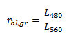
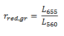
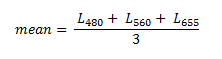
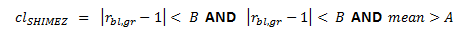
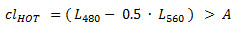
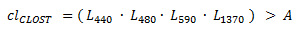
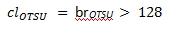
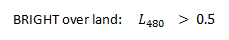
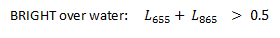
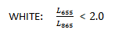

| SNAP Data Processors - Idepix Landsat-8 Algorithm Specification |
|
The Idepix classification algorithm for Landsat-8 is primarily based on a neural network approach [1]. Depending on the given scene, the user can select different neural nets for the processing, i.e. if the scene mainly consists of land or water pixels. As input, all spectral bands in the visible and near-infrared range are used: A few nets also use the thermal infrared spectral bands. The following neural nets are available:
The basic ideas behind the SHIMEZ cloud test are described in more detail in [2]. Finally, a cloud indicator from this test is derived as follows:
The three spectral bands at 480nm, 560nm and 655nm are considered. A blue/green ratio is defined as

and a red/green ratio as

and finally a red/green/blue mean value as

The SHIMEZ cloud indicator is then given by the boolean exppression

where A and B are user options for fine-tuning.
The basic ideas behind the HOT cloud test are also described in more detail in [2]. A cloud indicator from this test is simply given as:

where A is another user option for fine-tuning.
The CLOST cloud test has been provided by [3]. A cloud indicator from this test is given as:

where A is another user option for fine-tuning.
The basic ideas behind the OTSU cloud test are described in more detail in [4]. A cloud indicator from this test is simply given as:

where br is a 'brightness' value on a grey-scale interval [0, 255].
A pixel is finally classified as 'cloud sure' if the neural network test indicates the pixel as 'cloud sure' and one of the applied additional tests (SHIMEZ, HOT, CLOST, OTSU) indicates the pixel as cloudy. A pixel is finally classified as 'cloud ambiguous' if the neural network test indicates the pixel as 'cloud ambiguous'. The additional tests are not considered here.
A bright spectrum means that the intensity of the spectral curve (related to the albedo) should present relatively high values. Therefore, cloud brightness is calculated for each pixel as the integral of spectrum, and differs from the average of the spectral channels since it takes into account the distribution of the energy along the spectrum.
A white spectrum means that the spectral signature must be flat along the spectrum. The first derivative of the spectral curve should present low values, but noise and calibration errors may reduce the accuracy in the estimation of the spectrum flatness when computing the spectral derivative in channels with similar wavelengths.
In another classification step, , the spectral bands at 480nm, 655nm and 865nm are used to compute the 'whiteness' and the 'brightness', and to provide corresponding 'white' and a 'bright' flags:



The following additional pixel properties are provided from the classification:
From the algorithm steps outlined above, the following final classification flags are provided for Landsat-8:
Due to the large number of pixels in Landsat-8 products and the variety of classification tests, the pixel classification is usually rather time-consuming.
The following pixel properties are currently NOT provided for Landsat-8:
[1]
H. Schiller (Brockmann Consult), personal communication.
[2]
Zhe Zhu, Curtis E. Woodcock, ?Object-based cloud and cloud shadow detection in Landsat imagery. (2011)
[3]
M. Paperin (Brockmann Consult), personal communication.
[4]
Cloud detection in Landsat imagery of ice sheets using shadow matching technique and automatic normalized
difference snow index threshold value decision. (2004)
[5]
Farr, T. G., et al. (2007), The Shuttle Radar Topography Mission, Rev. Geophys., 45, RG2004,
doi:10.1029/2005RG000183.